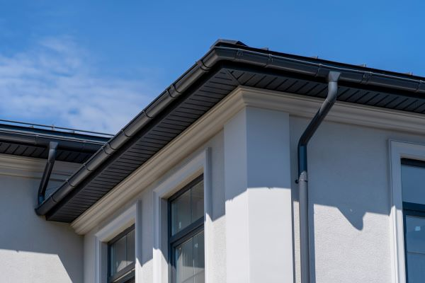
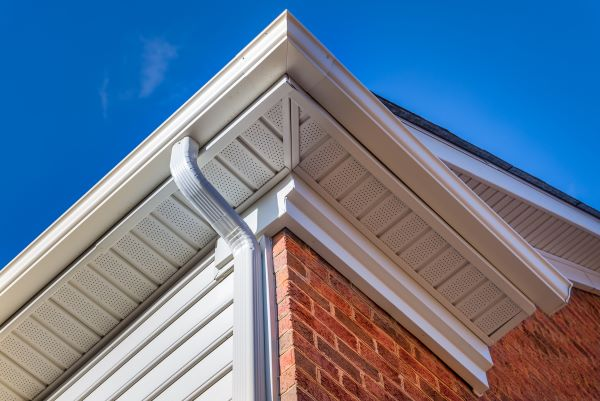

Gutter Options

Half-Round Gutters
Half-round gutters are an exceptional choice for homeowners and professionals looking for superior functionality, durability, and style.
- Easier to Clean: The smooth, rounded design allows debris to flow freely, reducing buildup.
- Aesthetic Appeal: Enhances the architectural beauty of any home.
- Optimal Flow: Promotes efficient water drainage.
- Stronger by Design: The curved structure provides inherent strength.
- Prevents Fascia Rot: Unlike K-style gutters, they don’t trap moisture.

5" K-Style Aluminum Gutters
5" K-Style aluminum gutters are a versatile and reliable choice for homes and commercial properties alike.
- Universal Appeal: Aluminum is widely used due to its flexibility and reliability.
- Rust-Free Longevity: Unlike steel, aluminum won’t rust or corrode.
- Customizable Colors: Available in a variety of baked-on finishes.
- Seamless Design Options: Ideal for modern, leak-resistant applications.
- Resistant to Extreme Climates: Stands up to snow, hail, and extreme weather.